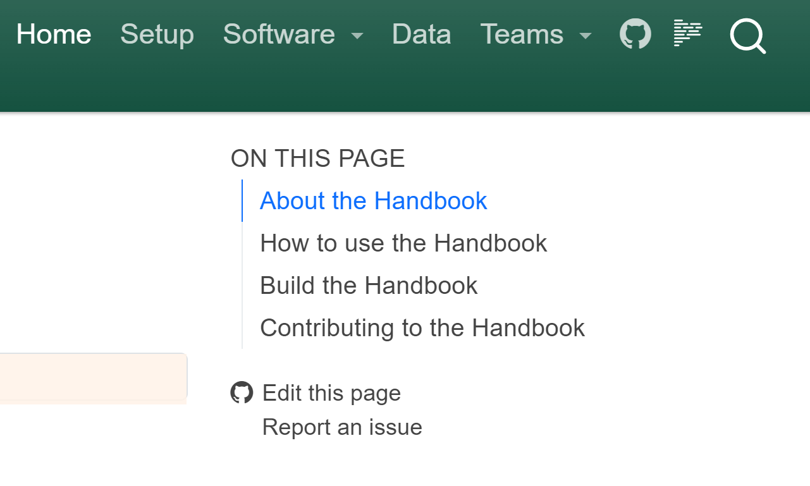

Contributing to the Handbook
How to use the Handbook
This handbook serves as shared repository for common tools, methods, and examples of how IPA develops and implements solutions for data analysis and software development.
We use this handbook to document ways in which we work together on developing code. As such, this should be a living document that tracks best practices and advice for the ways in which we work more effectively, learn together, and find joy in our work.
Documentation can seem like a tedious requirement. However, when there is documentation it helps to reduce the need to start afresh every time something needs to be done. Moreover, documentation provides a reference point for people to go to before they need to pursue information via email, chat, or other modes of communication.
Most guidelines in this handbook are intended as reference points. They are not absolute rules. Every person and team will have their own preferences and ways of working. The guide is meant to provide reference points for how we work today if someone has suggestions for improving our work processes, we should approach those suggestions with an open mind and willingness to understand the perspectives of our colleagues.
Reading the Handbook
The best ways to read the handbook are the following:
- Navigate to https://povertyaction.github.io/ipa-data-tech-handbook/docs
- Read the source code on GitHub.
- Read it locally on your computer by cloning the GitHub repository
Editing the Handbook
All IPA staff should feel empowered to edit this handbook. There are a few ways to edit the handbook.
A typical workflow to edit the handbook is the following:
- Make edits.
- Commit changes to this repository.
- Create a pull request, assign reviewers.
- Apply reviewers’ suggestions, if any.
- Merge all changes to the
mainbranch of the repository
You can contribute to this Handbook in a number of ways:
File an Issue on GitHub with recommended additions or edits.
Edit pages of the Handbook on GitHub by clicking on the “Edit this page” link on any page of the Handbook.

A little bit of Markdown
Most of the handbook relies on Markdown as the computer language for writing content. In order to edit the handbook, it is helpful to have a basic understanding of Markdown, which is the main format in which this handbook’s content is written.
Use the existing content of this handbook’s ipa-data-tech-handbook/docs folder as a reference for how to write in Markdown.
The following resources are helpful for getting to know the basics of Markdown:
Use the GitHub browser interface to edit the handbook
The easiest way to edit the handbook is to use the GitHub Web IDE. Go to https://github.com/PovertyAction/ipa-data-tech-handbook/docs/ and click on the file you want to edit. Then click on the pencil icon in the top right corner of the file to start editing.

Use the GitHub IDE to edit the handbook
Another option that GitHub provides is to edit the handbook documents using a Web-based integrated development environment (IDE).

Modify the handbook locally
Note that building the handbook from source code requires the following to be installed on your local computer (see Computer Setup for more information about software installation):
winget(Windows) orhomebrew(MacOS/Linux) for package management and installationgitfor source control managementjustfor running common command line patternspixifor installing Python and managing virtual environments
First, clone this repository to your local computer either via GitHub Desktop:

or from the command line:
# If using HTTPS
git clone https://github.com/PovertyAction/ipa-data-tech-handbook.git
# If using SSH
git clone git@github.com:PovertyAction/ipa-data-tech-handbook.gitThis repository uses a Justfile for collecting common command line actions that we run to set up the computing environment and build the assets of the handbook. Note that you should also have Git installed
To get started, make sure you have Just installed on your computer by running the following from the command line:
| Platform | Commands |
|---|---|
| Windows | winget install Git.Git Casey.Just prefix-dev.pixi GitHub.cli Posit.Quarto |
| Mac/Linux | brew install just pixi gh |
This will make sure that you have the latest version of Just, as well as Pixi (installer for Python) and Quarto (for writing and compiling scientific and technical documents).
- We use
Justin order to make it easier for all IPA users to be productive with data and technology systems. The goal of using aJustfileis to help make the end goal of the user easier to achieve without needing to know or remember all of the technical details of how we get to that goal. - We use Rye to help ease use of Python. Rye provides a global system for creating and building computing environments for Python.
- We use Quarto to allow users to focus on writing and data analytics. Writing in markdown, jupyter notebooks, python scripts, R scripts, etc. makes it easier to review, update, and deploy technical documentation.
As a shortcut, if you already have Just installed, you can run the following to install required software and build a python virtual environment that is used to build the handbook pages:
just get-startedNote: you may need to restart your terminal after running the command above to activate the installed software.
After the required software is installed, you can activate the Python virtual environment:
| Shell | Commands |
|---|---|
| Bash | .venv/Scripts/activate |
| Powershell | .venv/Scripts/activate.ps1 |
| Nushell | overlay use .venv/Scripts/activate.nu |
Preview the handbook
To build a version of the Handbook so that you can read it on your computer, run the following from a Terminal. Make sure that you are working from the root folder of this Git Repository:
just preview-docsThe command line above references the ipa-data-tech-handbook/_quarto.yml file and creates the .html files for the handbook then launches a browser window with a local server of the handbook at http://localhost:3434/docs.